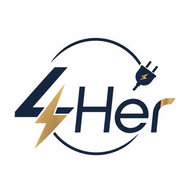

Software
Python · C · C++ · Java · JavaScript · HTML · CSS · PHP
- Single-page apps without frameworks
- PWA, Service Workers, offline-first
- Hand-written SVG charts & diagrams
SOFTWARE • AI/IoT • EMBEDDED • ENGINEERING
Hi, I'm Nannaphat Chalom — a student developer who builds complete, working systems: business ERPs used by real departments, hospital procurement tools, a shop POS with thermal printing, ESP32 farm controllers, LoRa emergency radios and PCB hardware.
const developer = {
name: "Nannaphat Chalom",
focus: [
"Software Engineering",
"AI & IoT",
"Embedded Systems",
"Engineering"
],
shipped: 12, // projects
stack: ["Python", "JS", "C++"],
status: "building & learning"
};ABOUT ME
I enjoy building complete projects — from user interfaces and backend APIs to databases, microcontrollers, sensors, circuit boards and real-world automation.
Most of my work starts from a real problem: a pharmaceutical company that runs on Excel forms, a hospital that needs government-format purchase documents, a laundry shop that needs receipts printed in Thai, a farm that needs watering while nobody is home.
I care about making technology practical, understandable and useful — and about the details that make a system trustworthy: data that survives redeploys, input validation, audit history, automated tests and clear documentation.
BY THE NUMBERS
Full systems across business software, healthcare, retail, mobile, IoT and hardware.
Python, JavaScript, Java, HTML/CSS, Arduino C++ and SQL I've written across these repositories.
Including earlier versions and rewrites — I iterate until a system works well.
Business ERP · Healthcare · Retail POS · IoT & Agriculture · Naval engineering.
TECH STACK
Python · C · C++ · Java · JavaScript · HTML · CSS · PHP
FastAPI · Flask · Node.js · PostgreSQL · MySQL · SQLite · REST APIs
ESP32 · ESP32-CAM · ESP8266 · Arduino · LoRa · GPS · Sensors · Relays
PCB Design · Electronics · Proteus · OpenCV · System Design · Prototyping
Capacitor · Android APK / AAB · PWA install
Git · GitHub Actions · GitHub Pages · Render Blueprints · Gunicorn
Unit tests · Node test runners · pytest · Input validation
UI/UX · Responsive layouts · Bilingual TH/EN · Print layouts

MOBILE APP • ANDROID STUDIO • JAVA
A native Android app for an electrical-appliance shop, written in Java in Android Studio and backed by an on-device SQLite database. Staff manage employees, products, categories and sales, run queries and make new tables, and print reports. Customers can sign up, browse the shop, fill a cart and track their orders.
Scroll sideways to see all screens · click a screen to enlarge
MOBILE APP • ANDROID STUDIO
An Android app that controls an ESP32 smart farm on home Wi-Fi: grow lights, a water pump, sensor readings, automation rules and a live ESP32-CAM camera. Built with Capacitor and Android Studio (package com.nannaphat.smartfarm). GitHub Actions builds a new APK on every push, and the project has a Google Play signing pipeline.
Scroll sideways to see all screens · click a screen to enlarge
SELECTED WORK
Click any project to see features, architecture and details.
JOURNEY
Each system went through several versions — I rebuild and refine based on how real users actually work.
School Room Status v1, StoneCraft Cafe website with admin panel, and the first three versions of the Hospital Purchase System.
Smart Plant Cloud — soil sensors and plant images posted from devices to a Flask + PostgreSQL backend.
Hospital Purchase System final (8 government Word forms), School Room Status v2 with login & CSRF, and Smart Water on FastAPI.
Life Plus ERP reaches v31, Digital Ship Inspection System, PowerBox SOS + Smart Battery Charger PCB, Laundry POS PWA, the Smart Farm Android app and the 4Her Electric Android app.
LET'S CONNECT
Explore my code and ongoing projects on GitHub.
github.com/Nannaphat31108 ↗